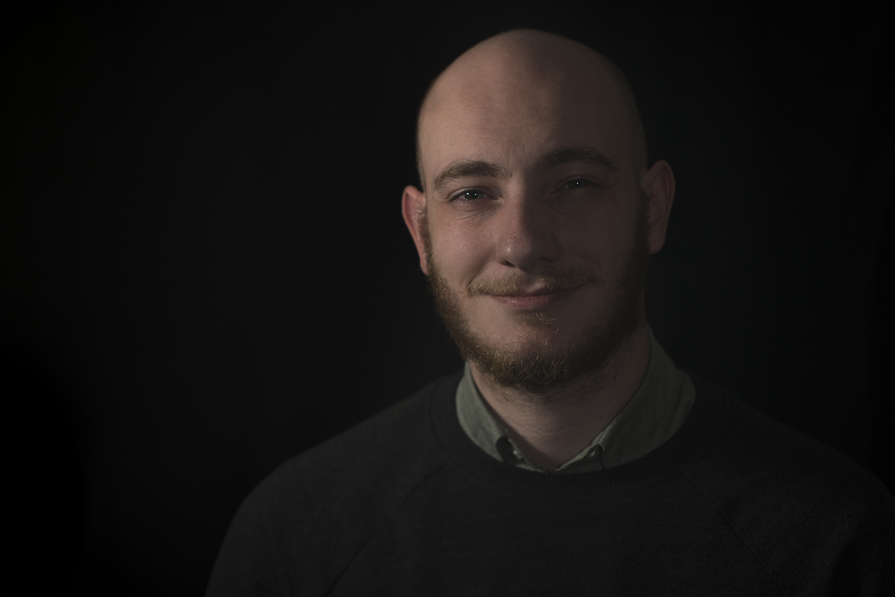

I'm a Dutch journalist and designer-developer. I studied History (BA) and Journalism (MA) at the University of Amsterdam.
I currently work as a freelancer. Some of my recent clients include Campscapes/iC-ACCESS, the Expertise Centre for Journalism, Pieter van Huystee Film & TV, Stichting Verhalende Journalistiek, Institute for Human Activities and Nieuwsuur.
I have been working as a student-assistant at the Coding the Humanities platform (UvA) and CREATE TOPIC (UvA). I was also interning at VPRO Digitaal/Tegenlicht as a creative coder and as a researcher at Pieter van Huystee.
A full resume is available upon request.
